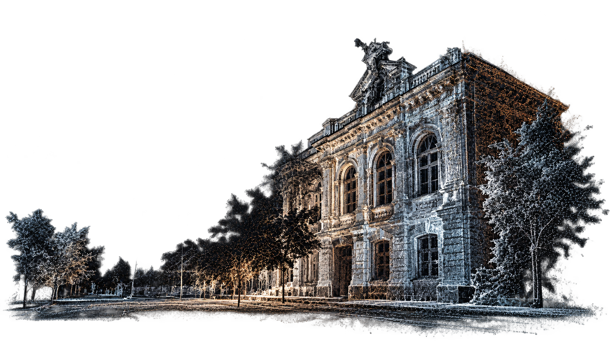
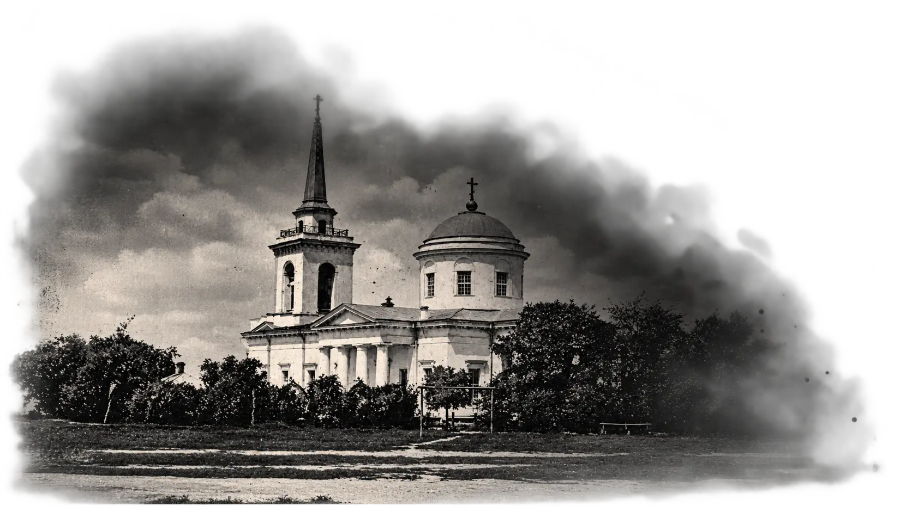
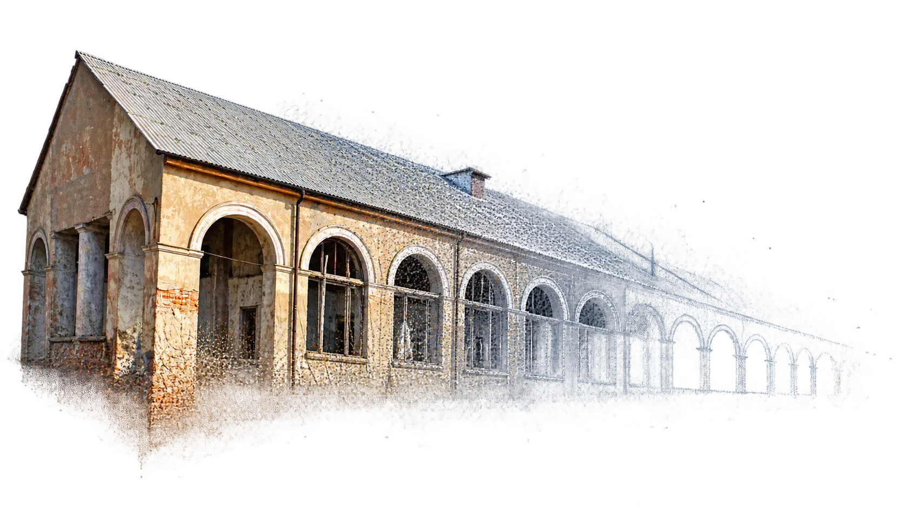
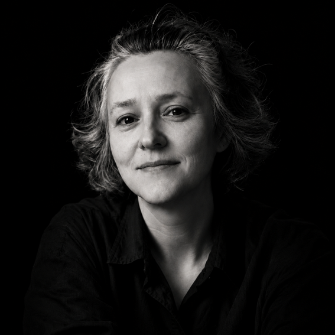

3D SCANNING
OF CHUHUIV'S ARCHITECTURAL HERITAGE
DIGITAL DOCUMENTATION FOR
PRESERVATION AND RECONSTRUCTION
2025 — 2026 / CHUHUIV, UKRAINE

02
BACKGROUND
HERITAGE
AT RISK
Context, challenges and research questions
Cultural heritage in Ukraine is facing an unprecedented threat. The war has only intensified processes that had been unfolding for decades: systematic neglect of historic environments, uncontrolled development, and destruction driven by short-term gain. For years, we ourselves have been erasing what previous generations had created, and now, compounded by the consequences of war, this process has taken on an irreversible character.
The issue is especially acute in Ukraine’s small historic towns, which are losing their populations, economic purpose, and cultural continuity. In the eastern regions of the country, the situation borders on hopelessness: war, depopulation, and the proximity to the border have all but eliminated the possibility of development.
The city of Chuhuiv in the Kharkiv region is unique for its planning structure, originally developed as a military settlement in the era of classicism. Today, it has become a dead end: the population is leaving, the urban fabric is deteriorating due to chaotic construction, and architectural monuments are degrading. Heritage re-creation is currently almost impossible — there are no available resources, no institutional attention, and the proximity to the border prevents any long-term planning.
Yet, the experience of other countries shows that a time for rebuilding always comes — and even severely damaged heritage can be restored. The key question is: what will we pass on to the next generations for this future work?
In heritage conservation theory, “re-creation” has always been the most controversial concept. For some, it is a falsification of history — a “replica” that undermines authenticity. For others, it is a necessary act of cultural memory that enables the return of what was lost.
In the European conservation tradition, there is no separate term for “re-creation” — the broader and more neutral “reconstruction” is used instead. In the Ukrainian discourse, however, “vidtvorennia” (re-creation) has emerged as a distinct category, reflecting a specific regional experience of rebuilding in the wake of massive loss.
The philosophy of the project is centered on developing a new model: how delayed re-creation can become a form of preservation, even in the absence of the physical substance of a heritage site.
There are many places like this across Ukraine—small historic towns facing the threat of disappearance. Using Chuhuiv as a case study, we aim to lay the groundwork for the future by initiating the creation of a digital archive of architectural heritage and developing a theoretical model of delayed re-creation as a new strategy for safeguarding cultural memory. Art Oborona
Unlike most contemporary digital documentation projects, which also claim to be future-oriented, 3D scanning in those cases is typically treated either as a technical preparatory step for immediate restoration or as the creation of a visual “image for a textbook,” without a clear strategy for future application.
Our approach is based on a different temporal logic: we see digital scanning as a tool for delayed re-creation—one that may gain relevance even generations from now.
We understand clearly: landmark monuments will be preserved, as they hold political and symbolic significance. But small-scale buildings, local ensembles, and entire fragments of urban fabric are doomed—they will be demolished or overbuilt, while communities, under the pressure of limited resources, will resign themselves to the loss. When future generations seek to restore what was destroyed, they may no longer have access to the material substance—but they will have a digital foundation.
Despite all international charters, guidelines, and recommendations that emphasize material authenticity, no global institution can deny communities the right to re-create their architectural heritage even in the absence of original substance.
Our project demonstrates that even under seemingly hopeless conditions, it is possible to act proactively: to document the present in order to open a path into the future. Art Oborona
The issues of preservation and restoration of cultural heritage have always been at the center of both international and national discussions.
Throughout the 20th and 21st centuries, doctrinal documents — including the Venice Charter (1964), the Nara Document on Authenticity (1994), the Riga Charter (2000), the Burra Charter (updated in 2013), and the UNESCO Recommendation on the Historic Urban Landscape (HUL, 2011) — have established key principles: the primacy of authenticity, justification of interventions, methodological transparency, and a balance between material substance and the values of place.
A major paradigm shift was the recognition that heritage is not only material but a multidimensional phenomenon: form, function, context, spirit of place, and social practices all hold equal significance (Nara Document, 1994).
Various models have been developed for post-war and post-catastrophe scenarios. However, a persistent question arises: is reconstruction a falsification — a newly built replica that undermines authenticity — or a legitimate cultural act of remembrance? This tension between "falsification" and "legitimate re-creation" remains unresolved and lies at the core of ongoing theoretical debates (see Post-trauma Recovery of Cultural Heritage, ICOMOS, 2017–2019, Vol. I–III). Art Oborona
Ukraine’s experience follows a distinct trajectory. The large-scale loss of heritage in the 20th century — including the destruction of monasteries and cathedrals, wars, and Soviet reconstruction policies — shaped a unique field of “bringing back the lost.”
The term vidtvorennia (re-creation) became established in professional discourse, yet it remains methodologically ambiguous: there are no clear criteria for the required source base, the acceptable extent of new material, or principles for marking the “new” versus the “old.”
This continues to fuel debate, with re-creation often branded as falsification, despite its evident role in preserving identity and collective memory (see Concept of National Policy on Cultural Heritage in Ukraine, ed. O.P. Oliinyk, 2014). Art Oborona
Against this backdrop, digital technologies—such as 3D scanning, photogrammetry, and HBIM—have become a global standard in the field of documentation. International frameworks, including the London Charter (2009) for computer-based heritage visualisation and the Seville Principles (2017) for virtual archaeology, have established guidelines that ensure reproducibility of results, transparency of interpretation, and validation of models.
Digital data allow for the measurement of deformations, recording of stratigraphy, and simulation of intervention scenarios.
At the same time, these practices in Ukraine face significant limitations. First, they remain focused primarily on isolated “landmark” monuments, while the architectural fabric and local ensembles of most small historic towns are largely overlooked. Second, digital documentation is predominantly reactive—capturing remnants only after destruction has occurred. Third, there is a disconnect between technical data and cultural logic.
In current practice, 3D scanning is mostly used as a tool for immediate restoration—a model is created for a specific project planned for implementation “now.” If, for various reasons, reconstruction does not proceed, the digital data remain merely as a “preserved memory,” rather than being seen as a strategic foundation for re-creation in the future.
Thus, the current state of research reveals a dual movement: on the one hand, there is an intensive integration of digital technologies into heritage practices; on the other, there is a lack of a theoretical framework that would make these practices part of cultural memory and re-creation strategies.
Added to this is the Ukrainian paradox: at the level of laws and official declarations, heritage is ostensibly protected, but in practice, it is systematically destroyed—often by the very hands formally tasked with its “preservation.” In such a context, we cannot halt the destruction, but we can create something stronger than today’s helplessness: a digital reservoir of memory that can serve as a foundation for delayed re-creation in the future.
Our project seeks to fill this gap by combining 3D scanning of Chuhuiv with the development of a model of delayed re-creation as a sustainable strategy for safeguarding the identity of small historic towns. Art Oborona

03
CONCEPT
DELAYED
RE-CREATION
A new form of cultural heritage preservation for situations where physical restoration is currently impossible.
-
DELAYED RE-CREATION
Physical re-creation is postponed, while the possibility of returning lost heritage in the future is preserved.
-
DIGITAL AUTHENTICITY
Digital records preserve verifiable characteristics of an authentic object and provide a reliable basis for future decisions.
-
DIGITAL DOCUMENTATION
Digital documentation preserves information about geometry, spatial structure, condition and context when physical heritage is at risk of loss.
-
METHODOLOGY
Material, conceptual, contextual and functional dimensions of heritage are considered together when assessing the possibilities and limits of re-creation.
-
FUTURE POSSIBILITY
Delayed re-creation does not predetermine physical reconstruction. It preserves the possibility of making an informed decision in the future.
04
RESEARCH
METHODS
An integrated research framework combining theoretical analysis, digital documentation and validation.
05
RESULTS
FOR THE
FUTURE
Digital documentation, research outputs and resources for future re-creation.
DIGITAL DOCUMENTATION
Point cloud · 3D model · Orthophotos
3D / POINT CLOUD
PREVIEW TO FOLLOW
06
TEAM
BEHIND
THE WORK
Researchers, heritage professionals and project partners.
-

Olesia
ChagovetsArchitect
-
Svitlana
BuchastaCurator
-
Olha
ShevchenkoCurator
-
Anastasiia
BozhenkoCommunications
Manager